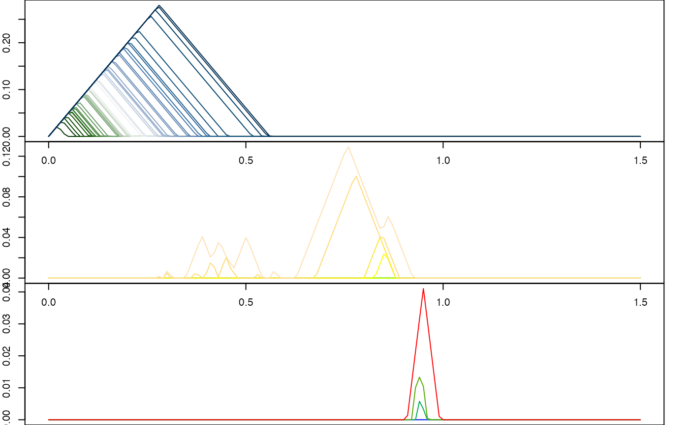

plot.RdA base::plot() method for persistence landscape objects.
# S4 method for class 'Rcpp_PersistenceLandscape'
plot(
x,
replace_inf = NULL,
n_levels = NULL,
palette = "default",
alpha = NULL,
rev = FALSE,
...,
silent = TRUE
)A persistence landscape object of class 'Rcpp_PersistenceLandscape'.
When using an exact representation of a persistence
landscape, infinite values can appear. If not NULL, this value will
replace Inf (and its negative will replace -Inf) in the plot.
Integer; number of levels to plot. If NULL (the default),
determined to be the number of levels in pl or x.
Character; either a color palette from
grDevices::palette.pals() or grDevices::hcl.pals(), or the name of a
palette function documented there (e.g. 'rainbow()'), or a vector of
colors for grDevices::colorRamp() to interpolate. The default palette = "default" uses the current default via [palette()].
Parameters passed to grDevices::palette.colors(),
grDevices::hcl.colors(), or grDevices::colorRampPalette(). Note that
recycle = TRUE is set internally.
Additional parameters passed to base::plot(). Values passed to
type or col will be ignored with a message.
Logical; whether to silence messages.
Rcpp_PersistenceLandscape for the exported C++ class and
pl_new() for the R wrapper.
# sample points
set.seed(650637L)
rpp <- tdaunif::sample_projective_plane(48L)
# compute persistence data, retaining parameters
pd <- ripserr::vietoris_rips(rpp, dim = 2L, threshold = 4)
#> Warning: `dim` parameter has been deprecated; use `max_dim` instead.
# plot landscapes
par(mfrow = c(3L, 1L), mar = c(0, 2, 0, 2))
# palette name
plot(pl_new(pd, degree = 0L, xmin = 0, xmax = 1.5, xby = 0.01),
palette = "Cork", lwd = 1)
# palette function name
plot(pl_new(pd, degree = 1L, xmin = 0, xmax = 1.5, xby = 0.01),
palette = "topo.colors", lwd = 1, rev = TRUE)
# custom color ramp
plot(pl_new(pd, degree = 2L, xmin = 0, xmax = 1.5, xby = 0.01),
palette = c("red", "green", "blue"), lwd = 1)

par(mfrow = c(1L, 1L), mar = c(5.1, 4.1, 4.1, 2.1))